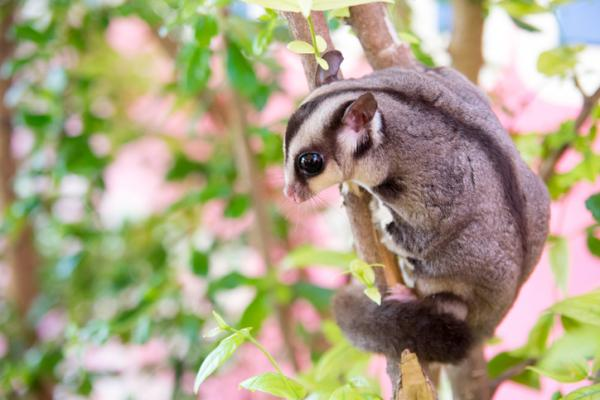
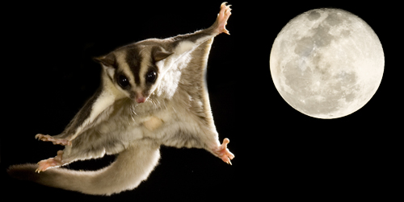

Indice della pagina
Introduzione ai Petauri dello Zucchero

Il Petauro dello Zucchero è un piccolo e affascinante marsupiale arboricolo originario delle foreste pluviali dell’Australia, della Nuova Guinea e dell’Indonesia. Nonostante le dimensioni ridotte e l'aspetto che ricorda quello di uno scoiattolo, è strettamente imparentato con i canguri e i koala.
Ciò che rende questi animali davvero unici è la loro straordinaria morfologia, progettata per la vita tra le cime degli alberi. Sono dotati di occhi grandi e neri, tipici delle creature notturne, che permettono loro di muoversi con estrema precisione nell'oscurità più totale. La loro caratteristica più celebre è la loro capacità di planare da albero ad albero.
Oltre alle doti fisiche, i petauri si distinguono per un'intelligenza vivace e una vita sociale intensissima. In natura vivono in gruppi familiari numerosi e comunicano tra loro attraverso una gamma sorprendente di suoni, che vanno da piccoli squittii a un verso che ricorda molto il latrato di un cagnolino. Per questo motivo, sono considerati animali estremamente esigenti in cattività.
Il mantello per planare

La caratteristica più spettacolare del Petauro dello Zucchero è senza dubbio la sua capacità di volare. Non si tratta di un volo battuto come quello degli uccelli, ma di un volo planato estremamente efficiente. Il segreto risiede nel patagio, una membrana di pelle sottile, elastica e ricoperta di pelo, che si estende dai polsi fino alle caviglie. Quando il petauro decide di spostarsi, si lancia dai rami più alti e spalanca le quattro zampe, tendendo questa membrana come se fosse la vela di un paracadute o la tuta di un "base jumper".
Una volta in aria, il petauro non si limita a cadere, ma diventa un vero asso dell'aerodinamica. Grazie alla sua coda lunga e folta, che funge da timone, è in grado di correggere la direzione del volo e di virare per evitare ostacoli improvvisi come rami o tronchi. La precisione è tale che questi piccoli marsupiali possono coprire distanze incredibili, arrivando a planare per oltre 50 metri con un singolo balzo, il tutto per spostarsi velocemente tra gli alberi della foresta senza dover mai scendere a terra, dove sarebbero troppo vulnerabili ai predatori.
Il momento più critico e affascinante è l'atterraggio. Poco prima di toccare il tronco dell'albero di destinazione, il petauro solleva le zampe anteriori, cambiando l'angolazione del patagio per creare una sorta di "effetto freno" che rallenta la velocità. Atterra dolcemente con tutte e quattro le zampe, i cui artigli affilati permettono una presa istantanea e sicura sulla corteccia. Questa incredibile evoluzione naturale permette loro di spostarsi agilmente in un habitat tridimensionale, rendendoli i veri "alianti viventi" del mondo animale.
Per tornare all'indice cliccare qui.
Il Petauro dello zucchero come animale domestico

Accogliere un Petauro dello Zucchero nella propria vita significa aprire le porte a un compagno estremamente affettuoso, ma anche molto impegnativo. A differenza di criceti o cavie, i petauri creano un legame simbiotico con il proprietario, che riconoscono attraverso l'odore e la voce. Poiché sono animali profondamente sociali, è assolutamente sconsigliato tenerne uno da solo: la solitudine può portarli a soffrire di depressione grave e ad atti di autolesionismo. La convivenza ideale prevede almeno una coppia, che permetta loro di interagire, pulirsi a vicenda e giocare durante le ore notturne, quando la loro energia è al massimo.
La gestione dello spazio è un altro fattore cruciale. Non possono vivere in piccole gabbie; necessitano di una grande voliera verticale (minimo 1,5 o 2 metri di altezza) che permetta loro di saltare e arrampicarsi come farebbero sugli alberi. All'interno della voliera non devono mai mancare sacchetti di stoffa morbida, che usano come nidi per dormire durante il giorno, e rami di legno non trattato. È fondamentale ricordare che il petauro è un animale notturno: questo significa che inizierà a essere attivo, a saltare e persino a "latrare" per comunicare proprio quando noi andiamo a dormire, un dettaglio da non sottovalutare se si ha il sonno leggero.
Infine, l'alimentazione rappresenta la sfida più grande per ogni proprietario. Non esiste un mangime pronto all'uso che sia davvero completo; la loro dieta è un mix complesso che deve includere una porzione specifica di frutta e verdura fresca, proteine (come insetti da pasto o uova sode) e un fondamentale integratore di calcio per evitare malattie ossee gravi. Richiedono una pulizia costante dell'ambiente e visite regolari da un veterinario esperto in animali esotici. In cambio di tutte queste attenzioni, il petauro saprà regalare momenti di estrema dolcezza, arrivando a dormire nelle tue tasche o a lanciarsi in volo verso di te per atterrarti sulla spalla.
Per tornare all'indice cliccare qui.
Segreti Notturni
Clicca sulle domande per scoprire le curiosità sui petauri:
Perché si chiamano "dello zucchero"?
Sono ghiotti di sostanze dolci! In natura vanno matti per il nettare dei fiori e la linfa zuccherina degli alberi di eucalipto.🍬
Ma quindi non sono roditori?
No! Anche se gli somiglia, il petauro è un marsupiale. Questo significa che è un parente stretto del canguro e del koala, non del criceto!🐨
Perché hanno gli occhi così grandi?
È il loro "visore notturno"! Gli occhi grandi servono a catturare la luce nel buio e a calcolare le distanze con precisione millimetrica durante i loro voli planati tra gli alberi.👁️🌙
Per tornare all'indice cliccare qui.
Scheda Riassuntiva
| Caratteristica | Dettaglio |
|---|---|
| Socialità | Altissima - Soffrono la solitudine (obbligatorio il compagno) |
| Alimentazione | Onnivori (Frutta, verdura, insetti e calcio specifico) |
| Longevità | 10-15 anni in cattività (molto longevi!) |
| Attività | Strettamente Notturni (attivi dalle 22:00 in poi) |
| Spazio Necessario | Voliera verticale molto alta (min. 1.80m) per planare |
| Carattere | Molto affettuosi, creano un legame "simbiotico" |
| Difficoltà | Alta - Richiedono molta esperienza e dieta precisa |
Torna all' indice.